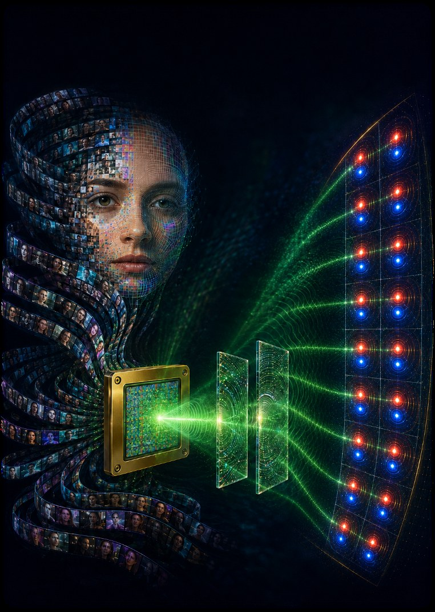

I am an undergraduate in ECE at UCLA (B.S. expected June 2027) and a researcher in Professor Aydogan Ozcan’s group, where I have worked since June 2024.
My work sits between optics and learning: diffractive optical processors that carry out inference in free space, and deep-learning reconstruction for label-free and fluorescence lifetime microscopy. I am applying to PhD programs for Fall 2027.
Research
Diffractive optical computing and imaging
Multiplexed optical neural computing for deepfake video detection
A hybrid system that pairs a lightweight digital encoder with a spatially multiplexed optical decoder on a programmable spatial light modulator. The experimental system (SLM, 4f relay, camera) reached 97.79% accuracy on facially manipulated deepfakes. Current work uses harmonic encoding to scale from 100 toward 800 parallel videos on an 8-megapixel SLM.
eLight 2026 · FiO 2026 · Photonics West 2027
Nonlinear computing with linear diffractive processors
A harmonic phase-encoding framework in which trainable, spatially varying point-spread functions act as Fourier coefficient banks, so each output pixel of a linear diffractive processor approximates a target nonlinear function. Extended to multivariate mappings over transformer activations and vision-language embeddings.
Wavelength diversity in diffractive optical processors
Camera-in-the-loop training that combines a differentiable physics model, camera measurements, and trust-region optimization to tune SLM phase patterns and illumination weights, reducing experimental error by 38% across 25 target functions.
arXiv 2026 · under review, Nat. Comput. Sci.Single-pixel diffractive quantitative phase imaging and virtual staining
A differentiable single-pixel QPI system with a learnable aperture and a time-multiplexed diffractive encoder. Phase reconstructions reach a Pearson correlation coefficient of 0.99 on cells and tissue; the same approach produces virtual H&E images of kidney, skin, and liver tissue.
Computational microscopy
Pixel super-resolved fluorescence lifetime imaging with deep learning
Reconstruction of high-resolution multispectral fluorescence intensity and lifetime maps from undersampled measurements, comparing conditional GANs, Brownian-bridge diffusion, and flow-matching models. Achieved a 25× increase in output space-bandwidth product for faster scanning in endoscopy-compatible FLIM systems.
PhotoniX 2026 · HHMI talk 2026Virtual histological staining from label-free FLIM
A paired FLIM–H&E dataset from 40 patients, a Laguerre-expansion deconvolution pipeline for lifetime maps, multiresolution registration, and a cascaded virtual-staining network bridging 7.5 µm FLIM pixels and 0.5 µm histology.
HHMI poster 2025Virtual Congo red staining and amyloid birefringence imaging
Adapted a wide-field microscope for birefringence imaging with a polarizer–analyzer pair, built a five-exposure high-dynamic-range pipeline, and am training a network that produces virtual Congo red and birefringence images from label-free autofluorescence.
Publications and patent
- Pixel super-resolved fluorescence lifetime imaging using deep neural networks PhotoniX 7, 56 (2026)
- Wavelength diversity expands the expressive power of optical computing arXiv:2610.23070 (2026)Under review, Nat. Comput. Sci.
- Scalable, energy-efficient optical-neural architecture for multiplexed deepfake media detection Patent application, filed through UCLA, 2026Pending
Talks and posters
- 2027
- Deepfake screening via multiplexed diffractive optical computingOral (accepted), SPIE Photonics West, February 2027
- 2026
- Optical-neural architecture for energy-efficient deepfake video detectionOral, Frontiers in Optics + Laser Science
- 2026
- Pixel super-resolved fluorescence lifetime imaging using deep learningOral, HHMI Research Symposium, UCLA
- 2025
- Super-resolved virtual histological staining of unlabeled FLIMPoster, HHMI Research Symposium, UCLA
Honors and fellowships
- 2026
- Optica Women Scholars FellowshipOptica Foundation, awarded to 20 women in optics and photonics worldwide
- 2026
- Iranian Scholarship Foundation AwardMerit scholarship for Iranian American undergraduates
- 2025
- Departmental Scholar, UCLA Electrical & Computer EngineeringConcurrent B.S./M.S. program, by department nomination
- 2025
- John DeGroff Haller Memorial ScholarshipUCLA merit award in electrical engineering
- 2024
- Break Through Tech AI FellowshipCornell Tech machine-learning program
Teaching and mentoring
- ACM
- Undergraduate research mentor, ACM at UCLAMentored six engineering and computer science undergraduates on entering research
- Lab
- High school research mentor, Ozcan Research GroupSupervised two high school researchers in computational imaging and deep learning
- ECE
- Lab teaching assistant and mentor, UCLA ECEMentored first-year and transfer students in EE labs and embedded-control projects